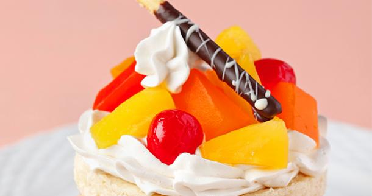

| Home | Desserts | Beverages | Dishes | Author | Credits |



Fruity Caramel Pie
Ingredients:
- 1/4 cup Sugar
- 1 tbsp Cornstarch (dissolved in reserved syrup)
- 1 tsp Lemon Zest (grated)
- 2 cups All-Purpose Flour (for cake)
- 1 tbsp Baking Powder (double acting, for cake)
- 1/2 tsp Iodized Fine Salt (for cake)
- 3 tbsp Brown Sugar (for cake)
- 2 tsp Sugar (for cake)
- 1/2 cup Unsalted Butter (cold, cut into bits, for cake)
- 2/3cup Milk (for cake)
- 2 tbsp Unsalted Butter (melted, for cake)
- 1 pack (250 ml) All-Purpose Cream (chilled, for topping)
- 2 tbsp Confectioner's Sugar (for topping)
- 3 tbsp Sour Cream (for topping)
- 1 can (832 grams) Del Monte)
- Fiesta Fruit Cocktail (drained, reserve 2 tbsp syrup)
Cooking Procedure:
- Preheat oven at 425ºF. Grease a 9” round pan or cookie sheet. Sift together flour, baking powder and salt.
- Add sugars and butter. Blend using fork, until it resembles coarse meal.
- Add milk and mix just to combine. Spread on pan. Bake for 10 minutes. Cool on wire rack for 5 minutes.
- Split shortcake horizontally and spread both cut surfaces with butter. Or if using cookie sheet, cut into desired shape. Set aside.
- Heat cornstarch until thicken. Add sugar and DEL MONTE Fiesta Fruit Cocktail. Heat for 2 minutes.
- Let cool then add lemon zest. Set aside.
Topping:
- Whip cream with sugar until fluffy. Add sour cream. Whip few minutes more.
- Spread cream over bottom half and top of cake. Spread fruit cocktail mixture on both cakes, and then assemble. Slice and serve.